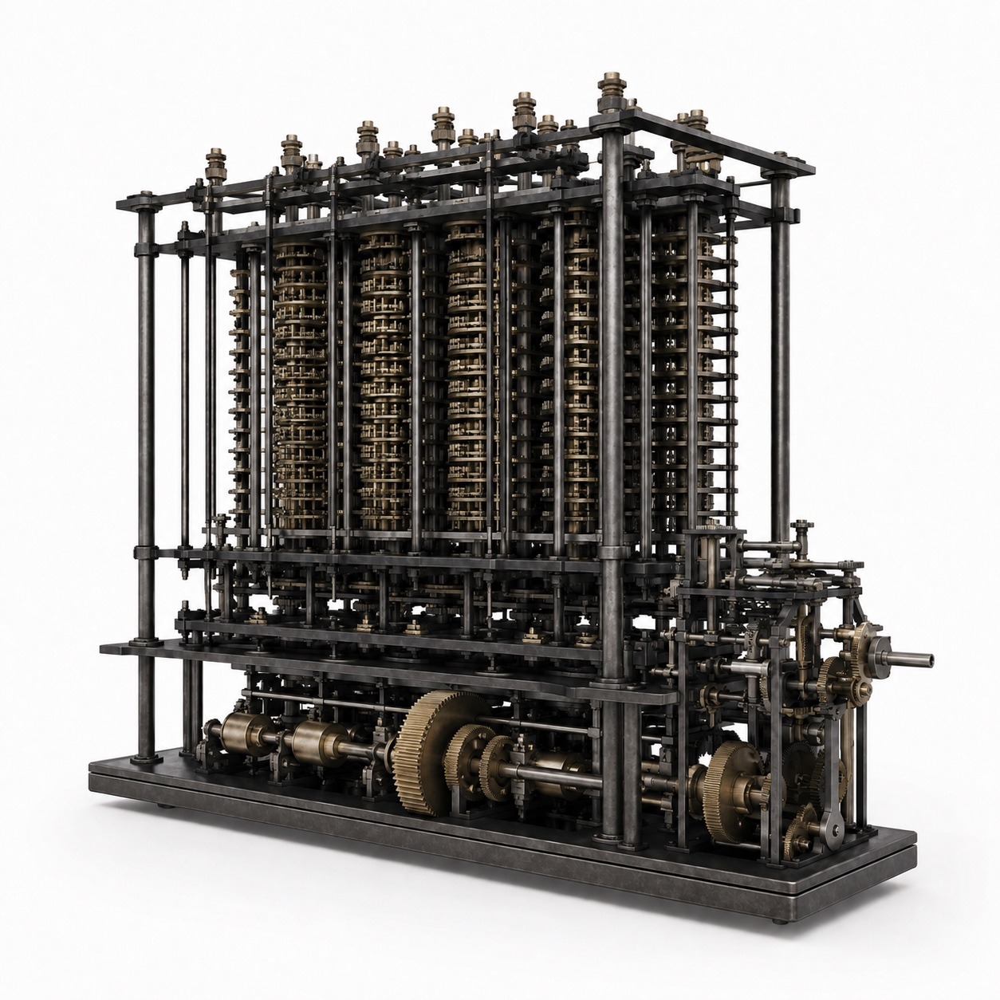

Tools are special things. They are not naturally occurring things. They are things that are physically transformed, transformed for utility, utility of people by people.
Computers are the most general tool we have ever built.
In fact, in theory, they are as general in their capabilities as any computing machine can be. A universal capability.
We use this universality to get our day-to-day things done and aspire to more. We do that by interacting with them physically, through touch, sight, and sound. (Not yet through smell and taste.)
While the theoretical capabilities remain the same, from the Analytical Engine of the 1830s to today’s most advanced Apple MacBook, there is a world of difference in how we interact with these tools.

The Analytical Engine
An artistic interpretation of Babbage’s design